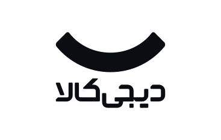
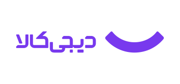
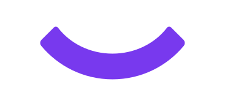

Mono on light — assets/digikala/*-black.svg

Reversed & accent — *-white.svg on violet-950 · *-violet.svg on light



assets/digikala/red-lockups/ for group-level work; the uploaded files carried no color data, so the exact red hex still needs to be supplied.